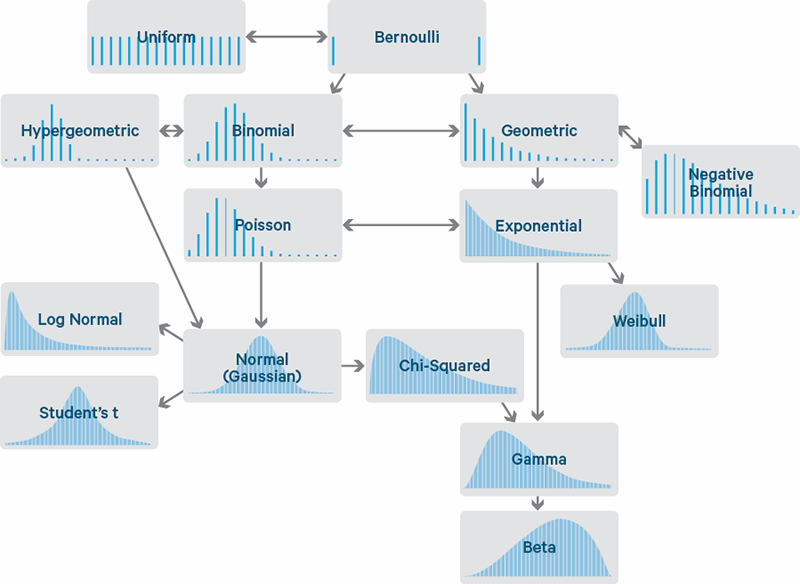

[1] 0 1 0 1 0 1 1 1 1 1Unidad 2: Generando variables aleatorias
La simulación de variables aleatorias a partir de distribuciones de probabilidad específicas es una herramienta fundamental en la estadística computacional.
El caso más elemental, podría corresponder a simular la extracción de una observación al azar desde una población finita. Para lograrlo, se hace necesario el poder generar observaciones aleatorias de la distribución uniforme discreta. Por lo que es esencial tener un generador adecuado de números pseudoaleatorios uniformes (Unidad anterior).
Los métodos para generar variables aleatorias de otras distribuciones de probabilidad dependen del generador de números aleatorios uniformes.
En R, el generador de números pseudoaleatorios uniformes se utiliza con la función runif. Para generar un vector de números (pseudo) aleatorios entre 0 y 1 se usa runif(n).
Para generar \(n\) números aleatorios \(Uniforme(a, b)\) se usa runif(n, a, b); para una matriz de números aleatorios se utilizan las funciones matrix(runif(n*m), nrow=n, ncol=m) o matrix(runif(n*m), n, m).
En esta unidad revisaremos algunas funciones para generar variables aleatorias de distribuciones de probabilidad continuas y discretas, algunas disponibles en R (como rbeta, rgeom, rchisq, etc.), aunque los métodos que describiremos son generales y aplicables a otros tipos de distribuciones y para su uso en bibliotecas externas, programas autónomos o problemas de simulación no estándar.
Ejemplo: Muestreando desde una población finita
La función sample puede ser utilizada para obtener muestras desde una población, con o sin reemplazo.
[1] "o" "t" "n" "c" "w" "g" "v" "s" "b" "r" "d" "f" "x" "z" "a" "e" "m" "k" "q"
[20] "l" "u" "j" "i" "y" "p" "h"En lo que sigue, revisaremos algunos generadores de números aleatorios con distribuciones conocidas, implementados en R. Sin embargo antes, necesitamos recordar algunos conceptos:
Función de masa de probabilidad (pmf): Describe la probabilidad de que una variable aleatoria discreta adopte un valor específico. En R, se usa d al inicio del nombre de la función, como dbinom.
Función de distribución de probabilidad (pdf): Indica la probabilidad relativa de un valor específico para una variable aleatoria continua. En R, se identifica con d, como dnorm.
Función de distribución acumulada (cdf): Muestra la probabilidad de que una variable aleatoria sea menor o igual a un cierto valor. En R, se usa p, como pnorm.
Función cuantíl: El inverso de la cdf, determina el valor de variable para una probabilidad acumulada dada. En R, se usa q, como qnorm.
Función generadora de números aleatorios: Genera muestras de una distribución de probabilidad. En R, se identifica con r, como rnorm.
Ejemplos: Algunas distribuciones conocidas
dbinom(x, size, prob, log = FALSE): Calcula la función de masa de probabilidad (pmf) para un número x de éxitos, dado un size (número total de ensayos) y prob (probabilidad de éxito en un ensayo).
pbinom(q, size, prob, lower.tail = TRUE, log.p = FALSE): Calcula la función de distribución acumulada (cdf) para un cuantil q, es decir, la probabilidad de obtener un número de éxitos menor o igual a q.
qbinom(p, size, prob, lower.tail = TRUE, log.p = FALSE): Determina el cuantil de la distribución binomial para una probabilidad acumulada p.
rbinom(n, size, prob): Genera n números aleatorios siguiendo una distribución binomial.
dnorm(x, mean = 0, sd = 1, log = FALSE): Función de densidad de probabilidad (pdf) para la distribución normal en un punto x, con mean (media) y sd (desviación estándar).
pnorm(q, mean = 0, sd = 1, lower.tail = TRUE, log.p = FALSE): Función de distribución acumulada (cdf) para la normal, probabilidad de que la variable sea menor o igual a q.
qnorm(p, mean = 0, sd = 1, lower.tail = TRUE, log.p = FALSE): Función cuantil para la normal, determina el valor de variable que corresponde a la probabilidad p.
rnorm(n, mean = 0, sd = 1): Genera n números aleatorios con distribución normal.
dexp(x, rate = 1, log = FALSE): Función de densidad de probabilidad (pdf) para la exponencial en un punto x, con rate (tasa de ocurrencia).
pexp(q, rate = 1, lower.tail = TRUE, log.p = FALSE): Función de distribución acumulada (cdf) para la exponencial, probabilidad de que la variable sea menor o igual a q.
qexp(p, rate = 1, lower.tail = TRUE, log.p = FALSE): Función cuantil para la exponencial, determina el valor de variable que corresponde a la probabilidad p.
rexp(n, rate = 1): Genera n números aleatorios con distribución exponencial.
Algunas distribuciones de probabilidad univariadas disponibles en R
| Distribución | cdf | Generador | Parámetros |
|---|---|---|---|
| beta | pbeta |
rbeta |
shape1, shape2 |
| binomial | pbinom |
rbinom |
size, prob |
| chi-cuadrado | pchisq |
rchisq |
df |
| exponencial | pexp |
rexp |
rate |
| F | pf |
rf |
df1, df2 |
| gamma | pgamma |
rgamma |
shape, rate or scale |
| geométrica | pgeom |
rgeom |
prob |
| lognormal | plnorm |
rlnorm |
meanlog, sdlog |
| binomial negativa | pnbinom |
rnbinom |
size, prob |
| normal | pnorm |
rnorm |
mean, sd |
| Poisson | ppois |
rpois |
lambda |
| T de Student | pt |
rt |
df |
| uniforme | punif |
runif |
min, max |
La Función de distribución acumulada (CDF) de una variable aleatoria \(X\) evaluada en \(x\) es la probabilidad de que \(X\) tome un valor igual o menor que \(x\) (\(P(X) = P(X \leq x)\)). Por ejemplo tomemos la distribución Normal con parámetros \(\mu=0\) y \(\sigma=1\)
Digamos que muestreamos una variable aleatoria desde la distribución normal \(N(\mu=0, \sigma=1)\), y obtenemos un valor de \(x=0.3\). Al revisar en la CDF podremos revisar el valor de la probabilidad acumulada de \(x\).
¿Qué podemos decir de lo anterior?:
Cuando extraemos una muestra aleatoria \(x\) de esta distribución, existe un \(62\%\) de que \(x \leq 0.3\). La CDF es una probabilidad, por lo que está en el rango \((0,1)\)
La CDF también es una función monótona creciente.
Esto es el concepto intuitivo del método de la transformada inversa. En vez de evaluar la CDF en \(x\), se evalúa la inversa de la CDF en un punto \(u\), donde \(u\) es una variable aleatoria desde una distribución \(Uniforme(0,1)\).
Iniciamos con un valor aleatorio entre 0 y 1 y empleamos la inversa de la CDF para convertirlo en el valor de \(x\) al cual pertenece la distribución objetivo.
El método de la transformada inversa para generar variables aleatorias está basado en el siguiente teorema (Fisher et al. 1936):
Teorema: Transformación integral de la probabilidad
Si \(X\) es una variable aleatoria contínua con \(cdf\) \(F_{X}(x)\), entonces
\[U=F_{X}(X) \sim Uniforme(0,1)\]
El método de la transformada inversa para generar variables aleatorias aplica el teorema anterior. Se define la transformación inversa:
\[F_{X}^{-1}(u) = inf\{ x: F_{X}(x)=u \}, \quad 0<u<1.\]
Si \(U\sim Uniforme(0,1)\), entonces para todo \(x \in \mathbb{R}\) se tiene que
por lo tanto \(F_{X}^{-1}(U)\) tiene la misma distribución que \(X\).
Para generar una observación \(X\), primero generamos una variable aleatoria \(Uniforme(0,1)\), denotada por \(u\) y computamos la inversa \(F_{X}^{-1}(u)\).
Este método es sencillo de implementar, siempre y cuando \(F_{X}^{-1}\) sea posible de computar.
Este método puede ser aplicado para generar variables aleatorias contínuas o discretas.
El método puede ser resumido de la siguiente manera:
Encontrar la función inversa \(F_{X}^{-1}(u)\).
Escribir una función para calcular \(F_{X}^{-1}(u)\).
Para cada variable aleatoria requerida:
Ejemplo: Supongamos que se quiere simular una muestra aleatoria desde una distribución con densidad \(f_{X}(x) = 3x^2, \; 0 <x<1\).
En este caso \(F_{X}(x) = x^3\) para \(0<x<1\) y \(F_{X}^{-1}(u) = u^{\frac{1}{3}}\).
Generamos los \(n\) números aleatorios requeridos como el vector u. Entonces u^(1/3) es un vector de largo n que contiene la muestra \(x_1, \ldots, x_n\)
Ejemplo: Distribución exponencial Es posible generar muestras aleatorias desde una distribución exponencial con media \(\frac{1}{\lambda}\).
Si \(X\sim Exp(\lambda)\), entonces para \(x>0\) la cdf de \(X\) es \(F_{X}(x) = 1 - e^{-\lambda x}\).
La transformación inversa es \(F_{X}^{-1}(u) = - \frac{1}{\lambda}log(1-u)\).
Notar que \(U\) y \(1-U\) tienen la misma distribución y en este caso es más sencillo definir \(x = - \frac{1}{\lambda}log(u)\).
Para generar una muestra aleatoria de tamaño n con parámetro lambda hacemos
Ejemplo: Distribución Kumaraswami
La función de distribución Kumaraswami puede ser expresada
\[F_{X}(x) = 1- (1-x^a)^b\]
Tenemos entonces que encontrar la función inversa de la CFF de la función de distribución, al hacer \(u = F_{X}(x)\)
\[ x= (1-(1-u)^{\frac{1}{b}})^{\frac{1}{a}} = F_{X}^{-1}(u)\]
library(tidyverse)
library(ggplot2)
set.seed(1)
n = 1000
a = 1/2
b = 2
u = runif(n)
df = data.frame(u) %>%
mutate(pdf_sim = (1 - (1 - u)^(1/b) ) ^(1/a),
x = seq(0.01, 1, length.out = n),
pdf_teorica = a*b*x^(a-1)*(1 - x^a)^(b-1))
df %>%
ggplot()+
geom_histogram(aes(x=pdf_sim, y=after_stat(density)),
bins=30, colour="white", fill="grey40") +
geom_line(aes(x=x, y=pdf_teorica), colour="green4",lwd = 1 ) +
ylab("Densidad f(x)") + xlab("x") +
ggtitle(paste0("Densidad de la distribución Kumaraswami (a=", a, " , b=", b, ")"))+
theme_bw()Genere números aleatorios utilizando el método de la inversa de las siguientes distribuciones:
Distribución Cauchy
Distribución Weibull
Supongamos que se necesita generar el valor de una variable aleatoria discreta denotada por \(X\), cuya función de masa de probabilidad está dada por \[P\{ X = x_j \} = p_j, \qquad j=0,1, \ldots, \sum_{j} p_j = 1\]
Para lograr lo anterior, necesitamos generar un número aleatorio \(U\), tal que \(U\) tenga una distribución \((0,1)\), y además establecer que \[X = \left\{\begin{array}{ll} x_0 & \mbox{Si} \; U < p_0 \\ x_1 & \mbox{Si} \; p_0 \leq U < p_0 + p_1\\ \vdots & \\ x_j & \mbox{Si} \; \sum_{i=0}^{j-1} p_i \leq U < \sum_{i=0}^{j} p_i \\ \vdots & \end{array}\right.\]
Dado que, para \(0<a<b<1\), \(P\{a \leq U < b \} = b-a\), tenemos que \[ P\{X = x_j \} = P\left\{ \sum_{i=0}^{j-1} p_i \leq U < \sum_{i=0}^{j} p_i \right\} = p_j \]
Entonces, \(X\) tendrá la distribución objetivo.
Podemos escribir el procedimiento anterior como pseudocódigo:
Si el \(i-\)ésimo elemento \(x_i, i \geq 0\) está ordenado de tal manera que \(x_0 < x_1 < x_2 \cdots\) y dejamos que \(F\) sea la función de distribución de \(X\). Así \(F(x_k) = \sum_{i=0}^{k}p_i\), entonces \[X \quad \mbox{será igual a } x_j \quad \mbox{Si} \quad F(x_{j-1}) \leq U < F(x_k)\]
En otras palabras, después de generar un número aleatorio \(U\), se determina el valor de \(X\) al encontrar un intervalo \(\left[ F(x_{j−1}), F(x_{j}) \right]\) en el cual se encuentra \(U\) (o de forma equivalente, al encontrar la inversa de \(F(U), F^{-1}(U)\)) . Por esta razón es que este método recibe su nombre: La transformada inversa para generar \(X\).
La cantidad de tiempo que este método tarda en generar una variable aleatoria discreta será proporiconal al número de intervalos que se deben buscar. Es por esta razón que es necesario considerar los posibles valores de \(x_j\) de \(X\) en orden decreciente para la \(p_j\).
Ejemplo: Supongamos que queremos simular desde una variable aleatoria \(X\) que sigue la siguiente distribución
\[f(x) = \left\{ \begin{align} 0.1 & \quad \mbox{Si } x = 1 \\ 0.4 & \quad \mbox{Si } x = 2 \\ 0.2 & \quad \mbox{Si } x = 3 \\ 0.3 & \quad \mbox{Si } x = 4 \\ \end{align}\right.\]
Tabulamos los posibles valores de \(x_i\) y de sus probabilidades \(P(X=x_i)\)
| \(x_i\) | \(P(X=x_i)\) |
|---|---|
| 1 | 0.1 |
| 2 | 0.4 |
| 3 | 0.2 |
| 4 | 0.3 |
Por lo que nuestra CDF se podría escribir de la siguiente manera:
\[F_{X}(x) = \left\{ \begin{align} 0.1 & \quad \mbox{Si } x = 1 \\ 0.5 & \quad \mbox{Si } x = 2 \\ 0.7 & \quad \mbox{Si } x = 3 \\ 1.0 & \quad \mbox{Si } x = 4 \\ \end{align}\right.\]
Ahora, en vez de encontrar la inversa de la CDF, la empleamos directamente. Generamos números aleatorios y encontramos el valor más pequeño de \(X\) tal que \(F(x) \geq u\):
library(knitr)
library(kableExtra)
set.seed(1)
u = runif(10)
fx = c(0.1, 0.4, 0.2, 0.3)
Fx = cumsum(fx)
# Especificar los valores de x
x = 1:4
# Encontrar el valor más pequeño de x con la CDF >= u
xsim = sapply(u, function(uval) min(x[Fx >= uval]))
# Mostrar tabla con los resultados
tibble(u = u, xsim = xsim) %>%
kbl(align = "c") %>%
kable_paper("hover", full_width=F) %>%
kable_styling(font_size=22)| u | xsim |
|---|---|
| 0.2655087 | 2 |
| 0.3721239 | 2 |
| 0.5728534 | 3 |
| 0.9082078 | 4 |
| 0.2016819 | 2 |
| 0.8983897 | 4 |
| 0.9446753 | 4 |
| 0.6607978 | 3 |
| 0.6291140 | 3 |
| 0.0617863 | 1 |
Finalmente, evaluamos el generador de números aleatorios a través de una muestra más grande.
library(ggplot2)
library(tidyverse)
n = 1000
u = runif(n)
fx = c(0.1, 0.4, 0.2, 0.3)
Fx = cumsum(fx)
x <- 1:4
# Encontrar el valor más pequeño de x con la CDF >= u
xsim <- sapply(u, function(uval) min(x[Fx >= uval]))
data.frame(table(xsim)) %>%
ggplot() +
geom_col(aes(xsim, Freq/n),
colour="white", fill="grey40") +
ylab("f(x)") + xlab("x") +
theme_bw()Supongamos que queremos generar una variable aleatoria Bernoulli (\(p\)) \(X\), en cuyo caso \(P(X = 0) = 1-p\) y \(P(X = 1) = p\) para algún \(p \in (0, 1)\). Entonces el método de transformación inversa discreta produce:
Algoritmo para generar una v.a. Bernoulli (\(p\)) \(X\):
Genera \(u_i \sim \text{unif}(0, 1)\).
Establece \(x_i = 0\) si \(u_i \leq 1-p\); \(x_i = 1\) si \(u_i > 1-p\).
Repetir pasos 1 y 2 \(n\) veces, tal que \(i=1, 2, \ldots, n\).
Ejemplo: Distribución Bernoulli Aplicamos la transformada inversa discreta para generar una muestra aleatoria \(Bernoulli(p=0.4)\).
En este ejemplo, \(F_{x}(0) = f_{X}(0) =1-p\) y \(F_{X}(1) = 1\).
Así, \(F_{X}^{-1}(u) = 1\) si \(u >0.6\) y \(F_{X}^{-1}(u) = 0\) si \(u \leq 0.6\).
El generador de la variable aleatoria debería entregar el valor numérico de la expresión lógica \(u>0.6\).
Podemos comparar los valores de los estadísticos muestrales con los momentos teóricos de la distribución Bernoulli.
La media muestral de la muestra generada debería ser aproximadamente \(p = 0.4\), en nuestro ejemplo, la media muestral estimada \(\bar{x}=\) 0.388.
La varianza muestral debería ser aproximadamente \(p(1-p) = 0.24\) y nuestra varianza muestral \(s^2=\) 0.2376937
Nota: En R, se puede utilizar la función rbinom (random binomial) de tamaño 1 (size=1) para generar una muestra de tipo Bernoulli. Otro método podría ser utilizar la función sample desde el vector \(x=\{0,1\}\) con probabilidades \((1-p, p)\).
Supongamos que queremos que \(X\) tenga una distribución binomial (\(n, p\)), es decir, \[p(k) = P(X = k) = \binom{n}{k} p^k(1-p)^{n-k}, 0 \leq k \leq n.\]
Uno podría, en principio, usar el método de transformación inversa discreta con estas \(p(k)\), pero también podemos notar que \(X\) puede ser representado (en distribución) como la suma de \(n\) v.a. Bernoulli (\(p\)) i.i.d, \(Y_1, \dots, Y_n\); \[X = \sum_{i=1}^n Y_i,\] el número de éxitos de \(n\) pruebas Bernoulli (\(p\)) i.i.d.
Algoritmo alternativo para generar una v.a. binomial (\(n, p\)) \(X\):
Generar \(n\) v.a. i.i.d. \(U_1, U_2, \dots, U_n \sim \text{unif}(0, 1)\).
Para cada \(1 \leq i \leq n\), establecer \(Y_i = 0\) si \(U_i \leq 1-p\); \(Y_i = 1\) si \(U_i > 1-p\). (Esto produce \(n\) v.a. Bernoulli (\(p\)) i.i.d.)
Establece \(X = \sum_{i=1}^n Y_i\).
La ventaja de este algoritmo es su simplicidad, no necesitamos hacer los diversos cálculos involucrados con las \(p(k)\). Por otro lado, este algoritmo requiere \(n\) uniformes para cada copia de \(X\) en lugar de solo uno cuando se usa el método de transformación inversa discreta.
Ejemplo: Generación de permutaciones aleatorias
Consideremos la generación de una permutación de los números \(1, 2, \ldots, n\) de tal manera que todos los \(n!\) ordenamientos posibles sean igualmente probables.
El procedimiento inicia seleccionando de manera aleatoria uno de los números \(1,\ldots, n\) y colocándolo en la posición \(n\).
Luego, se elige aleatoriamente uno de los \(n - 1\) números restantes, ubicándolo en la posición \(n - 1\).
El proceso continúa, seleccionando aleatoriamente uno de los \(n - 2\) números restantes para la posición \(n - 2\), y así sucesivamente.
La elección aleatoria de un número significa que cada uno de los números restantes tiene la misma probabilidad de ser seleccionado.
Para simplificar el proceso y evitar tener que identificar exactamente qué números quedan por posicionar, es práctico y eficiente mantener los números en una lista ordenada. Entonces, en lugar de elegir el número directamente, se selecciona aleatoriamente la posición del número. Partiendo de un ordenamiento inicial \(P_1, P_2, \ldots, P_n\), se elige una posición de \(1, \ldots, n\) al azar, intercambiando el número en esa posición con el que está en la posición \(n\). Posteriormente, se selecciona una de las posiciones \(1, \ldots, n - 1\) de manera aleatoria, intercambiando el número en esta posición con el que está en la posición \(n - 1\), y este procedimiento se repite sucesivamente.
Recordando que \(\text{Int}(kU) + 1\) tendrá la misma probabilidad de tomar cualquiera de los valores \(1, 2, \ldots, k\), vemos que el algoritmo anterior para generar una permutación aleatoria puede escribirse de la siguiente manera:
PASO 1. Sea \(P1, P2, \ldots, Pn\) cualquier permutación de \(1, 2, \ldots, n\) (por ejemplo, podemos elegir \(P_j = j, j = 1,\ldots, n\)).
PASO 2. Establecer \(k = n\).
PASO 3. Generar un número aleatorio \(U\) y dejar \(I = \text{Int}(kU) + 1\).
PASO 4. Intercambiar los valores de \(P_I\) y \(P_k\).
PASO 5. Dejar \(k = k - 1\) y si \(k > 1\), volver al Paso 3.
PASO 6. \(P1,...,Pn\) es la permutación aleatoria deseada.
Por ejemplo, supongamos \(n = 4\) y la permutación inicial es \(1, 2, 3, 4\). Si el primer valor de \(I\) (que tiene la misma probabilidad de ser \(1, 2, 3\) o \(4\)) es \(I = 3\), entonces los elementos en las posiciones \(3\) y \(4\) se intercambian y así la nueva permutación es \(1, 2, 4, 3\). Si el siguiente valor de \(I\) es \(I = 2\), entonces los elementos en las posiciones \(2\) y \(3\) se intercambian y así la nueva permutación es \(1, 4, 2, 3\). Si el valor final de \(I\) es \(I = 2\), entonces la permutación final es \(1, 4, 2, 3\), y este es el valor de la permutación aleatoria.
Otra manera de generar una permutación aleatoria es generar números aleatorios \(U_1, ..., U_n\), ordenarlos y luego usar los índices de los valores sucesivos como la permutación aleatoria. Por ejemplo, si \(n = 4\) y \(U_1 = 0.4, U_2 = 0.1, U_3 = 0.8, U_4 = 0.7\), entonces, debido a que \(U_2 < U_1 < U_4 < U_3\), la permutación aleatoria es 2, 1, 4, 3. La dificultad con este enfoque, sin embargo, es que ordenar los números aleatorios típicamente requiere del orden de \(n \log(n)\) comparaciones.
Práctica:
Implementar un generador de permutaciones aleatorias, utilizando lo planteado anteriormente en R
Supongamos que la función de densidad de probabilidad (pdf) \(f\), está acotada por u intervalo finito \(\left[a, b\right]\), y tiene valor cero fuera de dicho intervalo.
Sea
\[ c= sup\{ f(x): x \in \left[ a,b \right] \}.\]
Método de aceptación y rechazo
En este caso, el generar una variable aleatoria \(Z\sim f\) es muy sencillo, y puede ser implementado al seguir los siguientes pasos de aceptación-rechazo:
Generar \(X \sim U(a,b)\).
Generar \(Y \sim U(0,c)\) independiente de \(X\).
Si \(Y \leq f(X)\), hacer \(Z=X\). En cualquier otro caso, volver al Paso 1.
Es importante notar que cada vector \((X,Y)\) es distribuído de manera uniforme sobre el rectángulo \([a, b] \times [0, c]\). Por lo tanto, el par aceptado \((X, Y)\) está uniformemente distribuido bajo la curva de \(f\). Esto implica que la distribución de los valores aceptados de \(X\) tiene la densidad de probabilidad deseada \(f\).
Podemos generalizar lo anterior de la siguiente manera:
Sea \(g\) una densidad arbitraria tal que \(\phi(x) = C g(x)\) mayoriza \(f(x)\) para alguna constante \(C\); es decir, que \(\phi(x) \geq f(x)\) para todo \(x\). Notar que de necesidad \(C \geq 1\). Llamamos \(g(x)\) la pdf de propuesta y asumimos que es fácil generar variables aleatorias de ella.
Método de aceptación y rechazo con una función de mayorización \(\phi\)
Entonces el algoritmo de aceptación-rechazo puede ser escrito de la siguiente manera:
Generar \(X\) desde \(g(x)\).
Generar \(Y \sim U(0,C\; g(X))\).
Si \(Y \leq f(X)\), hacer \(Z_X\). En cualquier otro caso, volver al Paso 1.
Teorema:
La variable aleatoria generada de acuerdo con el Algoritmo anterior tiene la pdf deseada \(f(x)\).
Prueba:
Definimos los siguientes dos subconjuntos:
\[ \mathcal{A} = \{ (x, y) : 0 \leq y \leq Cg(x) \} \quad \text{y} \quad \mathcal{B} = \{ (x, y) : 0 \leq y \leq f(x) \}, \]
los cuales representan las áreas debajo de las curvas \(C\; g(x)\) y \(f(x)\), respectivamente. Note primero que los pasos 1 y 2 del Algoritmo implican que el vector aleatorio \((X, Y)\) está uniformemente distribuido en \(\mathcal{A}\). Para ver esto, sea \(q(x, y)\) la pdf conjunta de \((X, Y)\), y sea \(g(y | x)\) denotando la pdf condicional de \(Y\) dado \(X = x\). Entonces tenemos
\[ q(x, y) = \begin{cases} g(x) q(y | x) & \text{si } (x,y) \in \mathcal{A} \\ 0 & \text{de otra forma}. \end{cases} \]
Ahora, el Paso 2 afirma que \(q(y | x)\) es igual a \(1 / (Cg(x))\) para \(y \in [0, Cg(x)]\) y es cero de otra forma. Por lo tanto, \(q(x, y) = C^{-1}\) para cada \((x, y) \in \mathcal{A}\).
Sea \((X^*, Y^*)\) el primer punto aceptado, es decir, el primero que está en \(\mathcal{B}\). Dado que el vector \((X, Y)\) está uniformemente distribuido en \(\mathcal{A}\), entonces el vector \((X^*, Y^*)\) está uniformemente distribuido en \(\mathcal{B}\). Además, dado que el área de \(\mathcal{B}\) equivale a la unidad, la pdf conjunta de \((X^*, Y^*)\) en \(\mathcal{B}\) equivale a la unidad también. Así, la pdf marginal de \(Z = X^*\) es
\[ \int_0^{f(x)} 1 dy = f(x). \]
\[ P((X, Y) \text{ es aceptado}) = \frac{\text{área } \mathcal{B}}{\text{área } \mathcal{A}} = \frac{1}{C}. \]
En otras palabras:
Supongamos que se tiene un método para generar una variable aleatoria que tiene una función de densidad \(g(X)\).
Podemos usar esto como base para generar desde la distribución continua que tiene una función de densidad \(f(x)\) generando \(Y\) desde \(g\) y luego aceptando este valor generado con una probabilidad proporcional a \(\frac{f(Y)}{g(Y)}\).
Sea \(c\) una constante tal que \(\frac{f(y)}{g(y)} < c\) para todo \(y\). Luego tenemos la siguiente técnica para generar una variable aleatoria que tenga densidad \(f\).
Encontrar una variable aleatoria \(Y\) con densidad \(g\) que satisface \(\frac{f(t)}{g(t)} \leq c\), para todo \(t\) tal que \(f(t) >0\). Proveer de un método para generar de manera aleatoria \(Y\).
Para cada m.a. requerida:
PASO 1: Genera \(y\) teniendo densidad \(g\).
PASO 2: Genera un número aleatorio \(u \sim U(0,1)\).
PASO 3: Si \(u < \frac{f(y)}{cg(y)}\), establece \(x = y\). De lo contrario, rechazar \(y\) y regresar al PASO 1.
Notar que en el Paso 2, \[ P(\text{aceptar}|Y) = P\left(U < \frac{f(Y)}{cg(Y)} \Big| Y\right) = \frac{f(Y)}{cg(Y)}. \]
La última igualdad es simplemente la evaluación de la cdf de \(U\). Por lo tanto, la probabilidad total de aceptación en cualquier iteración es \[ \sum_{y} P(\text{aceptar}|y)P(Y = y) = \sum_{y} \frac{f(y)}{cg(y)}g(y) = \frac{1}{c}, \]
y el número de iteraciones hasta la aceptación tiene la distribución geométrica con media \(c\). Por lo tanto, en promedio cada valor de muestra de \(X\) requiere \(c\) iteraciones. Para eficiencia, \(Y\) debería ser fácil de simular y \(c\) pequeño.
Para ver que la muestra aceptada tiene la misma distribución que \(X\), aplicamos el Teorema de Bayes. En el caso discreto, para cada \(k\) tal que \(f(k) > 0\), \[ P(k | \text{aceptado}) = \frac{P(\text{aceptado} | k)g(k)}{P(\text{aceptado})} = \frac{[f(k)]/([cg(k)])}{1/c} g(k) = f(k). \]
El caso continuo es similar.
Notar que el método de rechazo es exactamente el mismo que en el caso de variables aleatorias discretas, con la única diferencia de que las densidades reemplazan a las funciones de masa.
De la misma manera que lo hicimos en el caso discreto podemos probar el siguiente resultado.
Teorema:
La variable aleatoria generada por el método de rechazo tiene densidad \(f\).
El número de iteraciones del algoritmo que se necesitan es una variable aleatoria geométrica con media \(c\).
Como en el caso discreto, se debe notar que la forma en que uno acepta el valor \(Y\) con probabilidad \(\frac{f(Y)}{cg(Y)}\) es generando un número aleatorio \(U\) y luego aceptando si \(U \leq \frac{f(Y)}{cg(Y)}\).
Vamos a demostrar cómo generar una variable aleatoria \(Z\) a partir de la pdf
\[ f(x) = \begin{cases} 2x, & 0 \leq x \leq 1 \\ 0, & \text{de lo contrario} \end{cases} \]
utilizando el método de aceptación-rechazo. Por simplicidad, tomemos \(g(x) = 1, 0 \leq x \leq 1\), y \(C = 2\). Es decir, nuestra distribución propuesta es simplemente la distribución uniforme en \([0, 1]\). En este caso, \(\frac{f(x)}{Cg(x)} = x\) y el Algoritmo se escribe de la siguiente manera:
Genera \(X\) de \(U(0,1)\).
Genera \(U\) de \(U(0,1)\) independientemente de \(X\).
Si \(U \leq X\), retorna \(Z = X\). De lo contrario, vuelve al Paso 1.
Notar que este ejemplo es meramente ilustrativo, ya que el método de transformación inversa lo maneja eficientemente.
La eficiencia del método de aceptación-rechazo modificado se determina nuevamente por la probabilidad de aceptación \(p = P(U \leq \frac{f(X)}{(Cg(X))}) = P(Y \leq f(X)) = \frac{1}{C}\) para cada intento \((X, U)\). Dado que los intentos son independientes, el número de intentos, \(N\), antes de que ocurra un par exitoso \((Z, U)\) tiene la siguiente distribución geométrica:
\[ P(N = n) = p(1 - p)^{n-1}, \quad n = 1, 2, \ldots, \]
con el número esperado de intentos igual a \(\frac{1}{p} = C\).
Para que este método sea de interés práctico, se deben usar los siguientes criterios al seleccionar la densidad de propuesta \(g(x)\):
Debe ser fácil generar una variable aleatoria de \(g(x)\).
La eficiencia, \(\frac{1}{C}\), del procedimiento debe ser grande, es decir, \(C\) debería estar cerca de 1 (lo que ocurre cuando \(g(x)\) está cerca de \(f(x)\)).
Generar una variable aleatoria \(Z\) de la densidad semicircular
\[ f(x) = \frac{2}{\pi R^2}\sqrt{R^2 - x^2}, \quad -R \leq x \leq R. \]
Tomar la distribución propuesta para ser uniforme sobre \([-R, R]\), esto es, toma \(g(x) = \frac{1}{2R}\), \(-R \leq x \leq R\) y elige \(C\) tan pequeño como sea posible tal que \(Cg(x) \geq f(x)\); por ende, \(C = \frac{4}{\pi}\). Entonces podemos escribir el el siguiente algoritmo de generación:
Generar dos variables aleatorias independientes, \(U_1\) y \(U_2\), de \(U(0, 1)\).
Usar \(U_2\) para generar \(X\) de \(g(x)\) vía el método de transformación inversa, es decir, \(X = (2U_2 - 1)R\), y calcular \(\frac{f(X)}{Cg(X)} = \sqrt{1 - (2U_2 - 1)^2}\).
Si \(U_1 \leq \frac{f(X)}{Cg(X)}\), lo cual es equivalente a \((2U_2 - 1)^2 \leq 1 - U_1^2\), hacer \(Z = X = (2U_2 - 1)R\); de otra manera, regresar al Paso 1.
El número esperado de intentos para este algoritmo es \(C = \frac{4}{\pi}\), y la eficiencia es \(\frac{1}{C} = \frac{\pi}{4} \approx 0.785\).
¿Cuántos números pseudo aleatorios debenser simulados en promedio para generar 1000 muestras desde la distribución \(Beta(\alpha=2, \beta=2)\), empleando este método?
Dependerá del límite superior \(c\) de \(\frac{f(x)}{g(x)}\), que depende de la elección de la función \(g(x)\).
La densidad \(Beta(2,2)\) es \(f(x)=6x(1-x), 0<x<1\). Sea \(g(x)\) la densidad \(Uniforme(0,1)\). Entonces \(\frac{f(x)}{g(x)} \leq 6\) para todo \(0<x<1\), así \(c=6\).
Una muestra aleatoria \(x\) desde \(g(x)\) es aceptada si \[\frac{f(x)}{c \, g(x)} = \frac{6x(1-x)}{6(1)} = x(1-x)>u\]
En promedio, \(c \, n = 6000\) iteraciones (12000 números aleatorios) serán requeridos para un tamaño de muestra igual a 1000. Podemos comprobarlo en la siguiente simulación:
En esta simulación, 5852 iteraciones fueron requeridas para generar 1000 muestras Beta. Comparamos los percentiles teóricos y empíricos.
library(tidyverse)
library(knitr)
library(kableExtra)
#Comparación de percentiles teóricos y empíricos
p <- seq(.1, .9, .1)
Qhat <- quantile(y, p)
#Cuantiles de la muestra
Q <- qbeta(p, 2, 2)
#Cuantiles teóricos
se <- sqrt(p * (1-p) / (n * dbeta(Q, 2, 2)))
data.frame(round(rbind(Qhat, Q, se), 3)) %>%
rename_at(vars(starts_with('X')), ~paste0(seq_along(.), '0%')) %>%
kbl(align = "c") %>%
kable_paper("hover", full_width=F) %>%
kable_styling(font_size=25)| 10% | 20% | 30% | 40% | 50% | 60% | 70% | 80% | 90% | |
|---|---|---|---|---|---|---|---|---|---|
| Qhat | 0.194 | 0.281 | 0.366 | 0.435 | 0.499 | 0.564 | 0.638 | 0.711 | 0.807 |
| Q | 0.196 | 0.287 | 0.363 | 0.433 | 0.500 | 0.567 | 0.637 | 0.713 | 0.804 |
| se | 0.010 | 0.011 | 0.012 | 0.013 | 0.013 | 0.013 | 0.012 | 0.011 | 0.010 |
Caso discreto:
Queremos simular valores de una v.a \(X\) tal que: \(\mathbb{P}(X=j) = p_j\), \(j =1,\ldots,6\), \(p_1=0.15\), \(p_2=0.16\), \(p_3=0.18\), \(p_4=0.19\), \(p_5=0.18\), \(p_6=0.14\), con \(q_j = \frac{1}{6}\), \(j =1,\ldots,6\), ie, \(Y \sim UD(1,\ldots,6)\)}
Elegimos \(c=\max \frac{p_j}{q_j} = 1.14 (j=4)\).
Pasos:
Generar \(u_1 \sim U(0,1)\).
Calcular \(y=[6 u_1]+1\).
Generar \(u_2 \sim U(0,1)\).
Si \(u_2 \leq \frac{p_y}{1.14 \frac{1}{6}} \Rightarrow x=y\) y parar, eoc, volver al Paso 1.
Implementar el ejemplo anterior en un ciclo de r = 1000 repeticiones y calcular la tasa de aceptación empírica.
Caso contínuo:
Generar valores de una v.a. Gamma\((\frac{3}{2},1)\) a partir de \(g(x)=\frac{2}{3} e^{-2\frac{x}{3}}\), \(x>0\)
Utilizar el método de aceptación/rechazo para generar una v. a. con función de densidad \(f(x) = 20 x(1-x)^3, \qquad 0 < x < 1\).
Generar valores de una v.a. Normal\((0,1)\) a partir de la densidad Cauchy \(g(x)=\frac{1}{\pi} \left(\frac{1}{1+y^2}\right)\), \(x \in \mathbb{R}\).
Muchos tipos de transformaciones además del método de transformación inversa de probabilidad pueden aplicarse para simular variables aleatorias. Algunos ejemplos son:
Si \(Z \sim N(0,1)\), entonces \(V = Z^2 \sim \chi^2(1)\).
Si \(U \sim \chi^2(m)\) y \(V \sim \chi^2(n)\) son independientes, entonces \(F = \frac{U/m}{V/n}\) tiene la distribución F con \((m, n)\) grados de libertad.
Si \(Z \sim N(0,1)\) y \(V \sim \chi^2(n)\) son independientes, entonces \(T = \frac{Z}{\sqrt{V/n}}\) tiene la distribución t de Student con \(n\) grados de libertad.
Método Box-Müller: Si \(U, V \sim \text{Unif}(0,1)\) son independientes, entonces
\[\begin{eqnarray} Z_1 =& \sqrt{-2 \log U} \cos(2\pi V), \\ Z_2 =& \sqrt{-2 \log V} \sin(2\pi U) \end{eqnarray}\]
son variables normales estándar independientes.
Si \(U \sim \text{Gamma}(r, \lambda)\) y \(V \sim \text{Gamma}(s, \lambda)\) son independientes, entonces \(X = \frac{U}{U+V}\) tiene la distribución Beta\((r, s)\).
Si \(U, V \sim \text{Unif}(0,1)\) son independientes, entonces
\[ X = \left\lfloor 1 + \frac{\log(V)}{\log(1 - (1 - \theta)U)} \right\rfloor \]
tiene la distribución Logarítmica\((\theta)\), donde \(\left\lfloor x \right\rfloor\) denota la parte entera de \(x\).
Recuerdan esta figura?
Ejemplo de algunas relaciones entre distribuciones univariadas
Enlaces con información más detallada:
La siguiente relación entre la distribución Beta y Gamma nos permite implementar otro RNG para la distribución Beta:
Si \(U \sim \text{Gamma}(r, \lambda)\) y \(V \sim \text{Gamma}(s, \lambda)\) son independientes, entonces \(X = \frac{U}{U+V}\) tiene la distribución Beta\((r, s)\).
Por lo tanto, podemos implementar un algoritmo para generar muestras aleatorias \(Beta(r,s)\)
Generar una muestra aleatoria \(u\) desde una distribución \(Gamma(a,1)\).
Generar una muestra aleatoria \(v\) desde una distribución \(Gamma(b,1)\).
Calcular \(\frac{u}{u+v}\).
Para generar una muestra aleatoria proveniente de una distribución \(Beta(3,2)\)
n <- 1000
a <- 3
b <- 2
u <- rgamma(n, shape=a, rate=1)
v <- rgamma(n, shape=b, rate=1)
x <- u / (u + v)
print(x[1:100]) [1] 0.1785884 0.5445075 0.6947001 0.8656039 0.7633113 0.3117103 0.5346568
[8] 0.8551243 0.4379071 0.8046751 0.2538818 0.5789318 0.5006593 0.8055877
[15] 0.4205466 0.6996796 0.6928022 0.7532208 0.3630649 0.7803501 0.3820578
[22] 0.4037790 0.9615570 0.8167136 0.7110212 0.3081472 0.7873189 0.7395515
[29] 0.6611742 0.7910903 0.3210334 0.3106950 0.7575779 0.5996522 0.2604717
[36] 0.6301943 0.9678052 0.3886486 0.6888294 0.6467294 0.3686549 0.6521048
[43] 0.4933808 0.7119907 0.8980924 0.6543846 0.2475923 0.7744678 0.2019214
[50] 0.7368245 0.5550486 0.5219131 0.6740776 0.3740246 0.2638140 0.9644488
[57] 0.3797149 0.4749358 0.5314753 0.7847241 0.9458239 0.7461899 0.4594762
[64] 0.4362033 0.4881184 0.3436201 0.7081080 0.4732468 0.5033110 0.4796188
[71] 0.7606784 0.5098181 0.6434120 0.5395007 0.9609418 0.3968011 0.7118716
[78] 0.2325506 0.3684421 0.5762307 0.4399937 0.7502540 0.6135231 0.3064664
[85] 0.6814964 0.7573213 0.8521979 0.5285770 0.7986032 0.3255244 0.6870631
[92] 0.5110796 0.3010627 0.7351797 0.5629944 0.6352725 0.7874648 0.3909429
[99] 0.7879142 0.7321640Podemos comparar la muestra obtenida con la distribución \(Beta(3,2)\), utilizando un gráfico de cuantíl-cuantíl (Quantile-Quantile plot, QQ plot). Si las distribuciones son similares, el gráfico debería parecerse:
library(ggplot2)
library(tidyverse)
data.frame(x, q) %>%
ggplot() +
stat_qq(aes(sample=x),
distribution = stats::qbeta,
dparams = c(a,b),
color="green4", size=3, alpha=0.5) +
stat_qq_line(aes(sample=x),
distribution = stats::qbeta,
dparams = c(a,b),
color="orange1", linewidth=1)+
ylab("Muestra generada") + xlab("Beta(3,2)") +
theme_bw()La línea \(x=q\) se añade para referencia. El QQplot de la muestra generada vs la \(Beta(3,2)\) es muy similar a una línea recta, como debería ser si es que efectivamente la distribución de la muestra generada a través del RNG es \(Beta\).
Implementaremos un RNG para muestras a partir de una distribución Logarítmica.
Si \(U,V\) son v.a. i.i.d. Uniforme\((0,1)\), entonces \[ X = \left\lfloor 1+ \frac{log(V)}{log(1-1(1-\theta)^U)} \right\rfloor\] Se distribuye \(Log(\theta)\).
Por lo tanto, podemos implementar un algoritmo para generar muestras aleatorias \(Log(\theta)\):
Generar una muestra aleatoria \(u\) desde una distribución \(Unif(0,1)\).
Generar una muestra aleatoria \(v\) desde una distribución \(Unif(0,1)\).
Calcular \(x = \left\lfloor 1+ \frac{log(v)}{log(1-1(1-\theta)^u)} \right\rfloor\).
Comparamos la distribución \(Log(\frac{1}{2})\) con una muestra generada a través de nuestro RNG, utilizando la transformación planteada.
n <- 1000
theta <- 1/2
# Muestras Uniformes
u <- runif(n)
v <- runif(n)
x <- floor(1 + log(v) / log(1 - (1 - theta)^u)) # Transformación a Log
k <- 1:max(x)
p <- -1 / log(1 - theta) * theta^k / k #calcula probabilidades
se <- sqrt(p*(1-p)/n)
p.hat <- tabulate(x)/n
library(knitr)
library(kableExtra)
data.frame(round(rbind(p.hat, p, se), 3)) %>%
kbl(align = "c", col.names = 1:max(x)) %>%
kable_paper("hover", full_width=F) %>%
kable_styling(font_size=25)| 1 | 2 | 3 | 4 | 5 | 6 | 7 | 8 | |
|---|---|---|---|---|---|---|---|---|
| p.hat | 0.705 | 0.177 | 0.067 | 0.031 | 0.012 | 0.005 | 0.001 | 0.002 |
| p | 0.721 | 0.180 | 0.060 | 0.023 | 0.009 | 0.004 | 0.002 | 0.001 |
| se | 0.014 | 0.012 | 0.008 | 0.005 | 0.003 | 0.002 | 0.001 | 0.001 |
Se muestran las probabilidades empíricas p.hat, las probabilidades teóricas p, y el error estándar se.
Sean \(X\) e \(Y\) dos variables independientes con distribución Normal estándar y sea \(R\) y \(\Theta\) las coordenadas polares del vector \((X,Y)\). Esto es:
\[ \begin{eqnarray} R^2 = & X^2 + Y^2 \\ tan(\Theta) = & \frac{Y}{X} \end{eqnarray}\]
Dado que \(X\) e \(Y\) son independientes, su densidad conjunta es el producto de sus densidades individuales, dada por
\[\begin{eqnarray} f(x,y) = & \frac{1}{\sqrt{2 \pi}} e^{-x^2/2} \frac{1}{\sqrt{2 \pi}} e^{-y^2/2} \\ = & \frac{1}{\sqrt{2 \pi}} e^{-(x^2 + y^2)/2} \end{eqnarray} \qquad(1)\]
Para determinar la densidad conjunta de \(R^2\) y \(\Theta\), denotada por \(f(d, \theta)\), hacemos el cambio de variables
\[ d = x^2 + y^2, \quad \theta = \tan^{-1}\left(\frac{y}{x}\right) \]
Dado que el Jacobiano de esta transformación (es decir, el determinante de las derivadas parciales de \(d\) y \(\theta\) con respecto a \(x\) e \(y\)) es fácilmente demostrado como igual a 2, se deduce de la Ecuación 1 que la función de densidad conjunta de \(R^2\) y \(\Theta\) está dada por
\[ f(d, \theta) = \frac{1}{2} \cdot \frac{1}{2\pi} e^{-d/2}, \quad 0 < d < \infty, \quad 0 < \theta < 2\pi \]
Sin embargo, como lo anterior es igual al producto de una densidad exponencial con media 2 (es decir, \(\frac{1}{2} e^{-d/2}\)) y la densidad uniforme en \((0, 2\pi)\) (es decir, \((2\pi)^{-1}\)), se deduce que
\(R^2\) y \(\Theta\) son independientes, con \(R^2\) exponencial con media 2 y \(\Theta\) uniformemente distribuida en \((0, 2\pi)\)
Ahora podemos generar un par de variables aleatorias normales estándar independientes \(X\) y \(Y\) usando lo anterior, para generar primero sus coordenadas polares y luego transformar de nuevo a coordenadas rectangulares. Esto se logra de la siguiente manera:
Paso 1: Generar números aleatorios \(U_1\) y \(U_2\).
Paso 2: \(R^2 = -2\log U_1\) (y así \(R^2\) es exponencial con media 2). \(\Theta = 2\pi U_2\) (y así \(\Theta\) es uniforme entre 0 y \(2\pi\)).
Paso 3: Ahora, sea
\[\begin{eqnarray} X = & R \cos \Theta = \sqrt{-2 \log U_1} \cos(2\pi U_2) \\ Y = & R \sin \Theta = \sqrt{-2 \log U_1} \sin(2\pi U_2) \end{eqnarray} \qquad(2)\]
Las transformaciones dadas por la Ecuación 2 son conocidas como las transformaciones de Box-Müller.
Desafortunadamente, el uso de las transformaciones de Box-Müller para generar un par de variables aleatorias normales estándar independientes no es computacionalmente muy eficiente. La razón de esto es la necesidad de calcular las funciones trigonométricas seno y coseno.
Sin embargo, hay una manera de evitar esta dificultad que consume tiempo mediante un cálculo indirecto del seno y coseno de un ángulo aleatorio (en lugar de un cálculo directo que genera \(U\) y luego calcula el seno y coseno de \(2\pi U\)).
Para empezar, observe que si \(U\) es uniforme en \((0, 1)\), entonces \(2U\) es uniforme en \((0, 2)\), y por lo tanto \(2U - 1\) es uniforme en \((-1, 1)\).
Así, si generamos números aleatorios \(U_1\) y \(U_2\) y definimos
\[\begin{eqnarray} V_1 =& 2U_1 - 1 \\ V_2 =& 2U_2 - 1 \end{eqnarray} \]
entonces \((V_1, V_2)\) está uniformemente distribuido en el cuadrado de área 4 centrado en \((0, 0)\)
Supongamos ahora que generamos continuamente pares \((V_1, V_2)\) hasta que obtenemos uno que esté contenido en el círculo de radio 1 centrado en \((0, 0)\), es decir, hasta que \((V_1, V_2)\) sea tal que \(V_1^2 + V_2^2 \leq 1\). \((V_1, V_2)\) está uniformemente distribuido en el círculo.
Si dejamos que \(R\) y \(\Theta\) representen las coordenadas polares de este par, entonces no es difícil verificar que \(R\) y \(\Theta\) son independientes, con \(R^2\) uniformemente distribuido en \((0, 1)\) y con \(\Theta\) uniformemente distribuido en \((0, 2\pi)\). Dado que
\[\begin{eqnarray} \sin \Theta =& \frac{V_2}{R} = \frac{V_2}{(V_1^2 + V_2^2)^{1/2}} \\ \cos \Theta =& \frac{V_1}{R} = \frac{V_1}{(V_1^2 + V_2^2)^{1/2}} \end{eqnarray}\]
se sigue que podemos generar el seno y el coseno de un ángulo aleatorio \(\Theta\) generando un punto aleatorio \((V_1, V_2)\) en el círculo y luego estableciendo
\[\begin{eqnarray} \sin \Theta =& \frac{V_2}{R} = \frac{V_2}{(V_1^2 + V_2^2)^{1/2}} \\ \cos \Theta =& \frac{V_1}{R} = \frac{V_1}{(V_1^2 + V_2^2)^{1/2}} \end{eqnarray}\]
Se deduce ahora de la transformación de Box-Muller (Ecuación 2) que podemos generar normales estándar independientes generando un número aleatorio \(U\) y estableciendo
\[\begin{eqnarray} X =& (-2 \log U)^{1/2} \frac{V_1}{(V_1^2 + V_2^2)^{1/2}} \\ Y =& (-2 \log U)^{1/2} \frac{V_2}{(V_1^2 + V_2^2)^{1/2}} \end{eqnarray} \qquad(3)\]
De hecho, dado que \(R^2 = V_1^2 + V_2^2\) está uniformemente distribuido en \((0, 1)\) y es independiente del ángulo aleatorio \(\Theta\), podemos usarlo como el número aleatorio \(U\) necesario en la Ecuación 3. Por lo tanto, dejando \(S = R^2\), obtenemos que
\[\begin{eqnarray} X =& (-2 \log S)^{1/2} \frac{V_1}{S^{1/2}} = V_1 \left(\frac{-2 \log S}{S}\right)^{1/2} \\ Y =& (-2 \log S)^{1/2} \frac{V_2}{S^{1/2}} = V_2 \left(\frac{-2 \log S}{S}\right)^{1/2} \end{eqnarray}\]
son normales estándar independientes cuando \((V_1, V_2)\) es un punto elegido al azar en el círculo de radio 1 centrado en el origen, y \(S = V_1^2 + V_2^2\).
Resumiendo, tenemos el siguiente enfoque para generar un par de normales estándar independientes:
Paso 1: Generar números aleatorios, \(U_1\) y \(U_2\).
Paso 2: Establecer \(V_1 = 2U_1 - 1, V_2 = 2U_2 - 1, S = V_1^2 + V_2^2\).
Paso 3: Si \(S > 1\), volver al Paso 1.
Paso 4: Devolver las normales estándar independientes.
\[ X = \sqrt{\frac{-2 \log S}{S}} V_1, \quad Y = \sqrt{\frac{-2 \log S}{S}} V_2 \]
Lo anterior se llama el método polar. Dado que la probabilidad de que un punto aleatorio en el cuadrado caiga dentro del círculo es igual a \(\pi/4\) (el área del círculo dividida por el área del cuadrado), se deduce que, en promedio, el método polar requerirá \(4/\pi \approx 1.273\) iteraciones del Paso 1. Por lo tanto, en promedio, requerirá \(2.546\) números aleatorios, \(1\) logaritmo, \(1\) raíz cuadrada, \(1\) división y \(4.546\) multiplicaciones para generar dos normales estándar independientes.
Sumas de Variables Aleatorias
Imaginemos que se tienen dos variables aleatorias diferentes, como la altura de una persona y su peso.
Si se quiere encontrar la distribución conjunta de la suma de estas dos variables, podemos pensar en cada posible combinación de altura y peso y sumar esos valores.
La suma de variables aleatorias tiende a mezclar sus distribuciones, resultando en una nueva distribución que combina las características de ambas.
Método:
Paso 1. Generar un valor aleatorio para cada una de las variables.
Paso 2. Sumar estos valores para obtener un nuevo valor aleatorio.
Paso 3. Repetir Paso 1.
Ejemplo:
Supongamos que se tienen dos variables aleatorias, \(X_1 \sim N(0, 1)\) y \(X_2 \sim N(3, 1)\). Para encontrar la distribución de su suma, \(S = X_1 + X_2\):
Generar un valor \(x_1\) de \(N(0, 1)\).
Generar un valor \(x_2\) de \(N(3, 1)\).
Sumar estos valores: \(s = x_1 + x_2\).
El resultado es una nueva variable aleatoria \(S\) que sigue una distribución normal con media 3 y varianza 2.
Mezclas de Variables Aleatorias
Pensemos en una mezcla de variables aleatorias como un chef que elige entre dos recetas diferentes para cocinar una comida.
En lugar de combinar todos los ingredientes de ambas recetas, el chef decide aleatoriamente cuál receta seguir cada vez que cocina.
Así, algunas comidas seguirán una receta y otras seguirán la otra, creando una mezcla de dos tipos de comidas en el menú.
Método:
Paso 1. Decidir de manera aleatoria cuál de las variables aleatorias utilizar.
Paso 2. Generar un valor aleatorio de la variable elegida.
Ejemplo:
Supongamos que tenemos dos variables aleatorias, \(X_1 \sim N(0, 1)\) y \(X_2 \sim N(3, 1)\). Para crear una mezcla de estas variables:
Elegimos aleatoriamente entre \(X_1\) y \(X_2\) con probabilidad igual.
Si escogemos \(X_1\), generamos un valor \(x\) de \(N(0, 1)\).
Si escogemos \(X_2\), generamos un valor \(x\) de \(N(3, 1)\).
El resultado es una nueva variable aleatoria \(X\) que tiene una distribución bimodal, ya que mezcla las dos distribuciones normales originales.
Sean \(X_1, \ldots, X_n\) independientes e idénticamente distribuidas con distribución \(X_j \sim X\), y sea \(S = X_1 + \cdots + X_n\). La función de distribución de la suma \(S\) se llama la \(n\)-ésima convolución de \(X\) y se denota \(F_X^{*(n)}\).
Es sencillo simular una convolución generando directamente \(X_1, \ldots, X_n\) y calculando la suma.
Varias distribuciones están relacionadas por convolución.
Si \(\nu > 0\) es un entero, la distribución chi-cuadrado con \(\nu\) grados de libertad es la convolución de \(\nu\) variables aleatorias normales estándar iid al cuadrado.
La distribución binomial negativa \(\text{NegBin}(r, p)\) es la convolución de \(r\) variables aleatorias geométricas iid \(\text{Geom}(p)\).
La convolución de \(r\) variables aleatorias exponenciales independientes \(\text{Exp}(\lambda)\) tiene la distribución Gamma\((r, \lambda)\).
Consultar el siguiente enlace para una presentación introductoria de estas y muchas otras relaciones interesantes entre familias de distribuciones.
Ejemplo: Distribución Chi-cuadrado
Podemos generar una variable aleatoria chi cuadrado \(\chi^2(\nu)\) como la convolución de \(\nu\) normales al cuadrado. Si \(Z_1, \ldots, Z_\nu\) son variables aleatorias iid \(N(0,1)\), entonces \(V = Z_1^2 + \cdots + Z_\nu^2\) tiene la distribución \(\chi^2(\nu)\). Los pasos para generar una muestra aleatoria de tamaño \(n\) de \(\chi^2(\nu)\) son los siguientes:
Paso 1. Llenar una matriz \(n \times \nu\) con \(n\nu\) muestras aleatorias \(N(0,1)\).
Paso 2. Elevar al cuadrado cada entrada en la matriz (1).
Paso 3. Calcular las sumas de las filas de los normales al cuadrado. Cada suma de fila es una observación aleatoria de la distribución \(\chi^2(\nu)\).
Paso 4. Entregar el vector de sumas de filas.
Un ejemplo con \(n = 1000\) y \(\nu = 2\) se muestra a continuación.
n <- 1000
nu <- 2
X <- matrix(rnorm(n * nu), n, nu)^2 # matriz de normales al cuadrado
# sumar los normales al cuadrado a través de cada fila: método 1
y <- rowSums(X)
# método 2
y <- apply(X, MARGIN=1, FUN=sum) # un vector de longitud n
mean(y)[1] 1.998142[1] 3.830044Una variable aleatoria \(\chi^2(\nu)\) tiene media \(\nu\) y varianza \(2\nu\). Nuestros parámetros calculados concuerdan muy de cerca con los parámetros teóricos.
Una variable aleatoria \(X\) es una mezcla discreta si la distribución de \(X\) es una suma ponderada \(F_X(x) = \sum \theta_i F_{X_i}(x)\) para alguna secuencia de variables aleatorias \(X_1, X_2, \ldots\) y \(\theta_i > 0\) tal que \(\sum \theta_i = 1\). Las constantes \(\theta_i\) se llaman pesos de mezcla o probabilidades de mezcla. Aunque la notación es similar para sumas y mezclas, las distribuciones representadas son diferentes.
Una variable aleatoria \(X\) es una mezcla continua si la distribución de \(X\) es \(F_X(x) = \int_{-\infty}^{\infty} F_{X|Y=y}(x) f_Y(y) \, dy\) para una familia \(X|Y = y\) indexada por los números reales \(y\) y la función de ponderación \(f_Y\) tal que \(\int_{-\infty}^{\infty} f_Y(y) \, dy = 1\).
Comparamos los métodos para la simulación de una convolución y una mixtura de variables normales. Supongamos \(X_1 \sim N(0, 1)\) y \(X_2 \sim N(3, 1)\) son independientes. La notación \(S = X_1 + X_2\) denota la convolución de \(X_1\) y \(X_2\). La distribución de \(S\) es normal con media \(\mu_1 + \mu_2 = 3\) y varianza \(\sigma_1^2 + \sigma_2^2 = 2\).
Para simular la convolución:
Paso 1. Generar \(x_1 \sim N(0, 1)\).
Paso 2. Generar \(x_2 \sim N(3, 1)\).
Paso 3. Hacer \(s = x_1 + x_2\).
También podemos definir una mezcla normal al 50%, denotada \(F_X(x) = 0.5F_{X_1}(x) + 0.5F_{X_2}(x)\). A diferencia de la convolución anterior, la distribución de la mezcla \(X\) es claramente no normal; es bimodal.
Para simular la mezcla:
Paso 1. Generar un entero \(k \in \{1, 2\}\), donde \(P(1) = P(2) = 0.5\).
Paso 2. Si \(k = 1\), entregar un valor aleatorio \(x\) de \(N(0, 1)\); si \(k = 2\), entregar un valor aleatorio \(x\) de \(N(3, 1)\).
Comparación entre Convoluciones y mezclas
Sean \(X_1 \sim \text{Gamma}(2, 2)\) y \(X_2 \sim \text{Gamma}(2, 4)\) independientes. Comparamos los histogramas de las muestras generadas por la convolución \(S = X_1 + X_2\) y la mezcla \(F_X = 0.5F_{X_1} + 0.5F_{X_2}\).
library(tidyverse)
library(reshape2)
n <- 1000
x1 <- rgamma(n, 2, 2)
x2 <- rgamma(n, 2, 4)
s <- x1 + x2 # la convolución
u <- runif(n)
k <- as.integer(u > 0.5) # vector de 0's y 1's
x <- k * x1 + (1 - k) * x2 # la mezcla
data.frame(s, x) %>%
melt(key = c("s", "x"), value.name="sim") %>%
ggplot() +
geom_histogram(aes(x=sim), color = "green4", fill="orange3") +
facet_wrap(~variable) +
xlab("Histogramas") + ylab("Frecuencia") +
theme_bw()El método de generación de la mezcla del ejemplo anterior es simple para una mezcla de dos distribuciones, pero no para mezclas arbitrarias. El siguiente ejemplo ilustra cómo generar una mezcla de varias distribuciones con probabilidades de mezcla arbitrarias.
Mezcla de varias distribuciones gamma
Este ejemplo es similar al anterior, pero hay varios componentes en la mezcla y los pesos de mezcla no son uniformes. La mezcla está dada por
\[ F_X = \sum_{i=1}^{5} \theta_j F_{X_j}, \]
donde \(X_j \sim \text{Gamma}(r = 3, \lambda_j = 1/j)\) son independientes y las probabilidades de mezcla son \(\theta_j = j/15, \, j = 1, \ldots, 5\).
Para simular una variable aleatoria de la mezcla \(F_X\):
Paso 1. Generar un entero \(k \in \{1, 2, 3, 4, 5\}\), donde \(P(k) = \theta_k, \, k = 1, \ldots, 5\).
Paso 2. Entregar un valor aleatorio \(\text{Gamma}(r, \lambda_k)\).
library(ggplot2)
# Generar datos
n <- 5000
k <- sample(1:5, size=n, replace=TRUE,
prob=(1:5)/15)
tasa <- 1/k
x <- rgamma(n, shape=3, rate=tasa)
# Crear un dataframe para ggplot2
df <- data.frame(value = x, tipo = "Mezcla")
# Agregar las densidades de los componentes
for (i in 1:5) {
df_componente <- data.frame(
value = rgamma(n, 3, 1/i),
tipo = paste("Componente", i))
df <- rbind(df, df_componente)
}
# Graficar usando ggplot2
ggplot(df, aes(x = value, color = tipo)) +
geom_density() +
xlim(0, 40) +
ylim(0, 0.3) +
labs(x = "x", y = "Densidad") +
theme_minimal()Mezcla de varias distribuciones gamma
Sea
\[ F_X = \sum_{j=1}^{5} \theta_j F_{X_j}, \]
donde \(X_j \sim \text{Gamma}(3, \lambda_j)\) son independientes, con tasas \(\lambda = (1, 1.5, 2, 2.5, 3)\) y probabilidades de mezcla \(\theta = (0.1, 0.2, 0.2, 0.3, 0.2)\).
Este ejemplo es similar al anterior. Muestrea de 1:5 con pesos de probabilidad \(\theta\) para obtener un vector de longitud \(n\). La posición \(i\)-ésima en este vector indica cuál de las cinco distribuciones gamma se muestreará para obtener el elemento \(i\)-ésimo de la muestra. Este vector se usa para seleccionar el parámetro de tasa correcto del vector \(\lambda\).
Comparar las primeras entradas de k y los valores correspondientes de tasa con \(\lambda\).
Mezcla Poisson-Gamma
Este es un ejemplo de una mezcla continua. La distribución binomial negativa es una mezcla de distribuciones de Poisson(\(\Lambda\)), donde \(\Lambda\) tiene una distribución gamma. Específicamente, si \((X|\Lambda = \lambda) \sim \text{Poisson}(\lambda)\) y \(\Lambda \sim \text{Gamma}(r, \beta)\), entonces \(X\) tiene la distribución binomial negativa con parámetros \(r\) y \(p = \beta / (1 + \beta)\) (ver, por ejemplo, [23]). Este ejemplo ilustra un método de muestreo de una mezcla Poisson-Gamma y compara la muestra con la distribución binomial negativa.
# Generar una mezcla Poisson-Gamma
library(knitr)
library(kableExtra)
library(tidyverse)
n <- 1000
r <- 4
beta <- 3
lambda <- rgamma(n, r, beta) # lambda es aleatoria
# Ahora suministrar la muestra de lambda como la media de Poisson
x <- rpois(n, lambda) # la mezcla
# Comparar con la binomial negativa
mix <- tabulate(x + 1) / n
negbin <- round(dnbinom(0:max(x), r, beta/(1+beta)), 3)
se <- sqrt(negbin * (1 - negbin) / n)
round(rbind(mix, negbin, se), 3)
tibble(mix = mix, negbin = negbin, se = se) %>%
kbl(align = "c") %>%
kable_paper("hover", full_width=F) %>%
kable_styling(font_size=20) [,1] [,2] [,3] [,4] [,5] [,6] [,7] [,8]
mix 0.314 0.325 0.218 0.084 0.038 0.014 0.004 0.003
negbin 0.316 0.316 0.198 0.099 0.043 0.017 0.006 0.002
se 0.015 0.015 0.013 0.009 0.006 0.004 0.002 0.001| mix | negbin | se |
|---|---|---|
| 0.314 | 0.316 | 0.0147018 |
| 0.325 | 0.316 | 0.0147018 |
| 0.218 | 0.198 | 0.0126014 |
| 0.084 | 0.099 | 0.0094445 |
| 0.038 | 0.043 | 0.0064149 |
| 0.014 | 0.017 | 0.0040879 |
| 0.004 | 0.006 | 0.0024421 |
| 0.003 | 0.002 | 0.0014128 |
Un vector aleatorio \(X = (X_1, \ldots, X_d)\) tiene una distribución normal multivariante de \(d\) dimensiones denotada \(N_d(\mu, \Sigma)\) si la densidad de \(X\) es
\[ f(x) = \frac{1}{(2\pi)^{d/2} |\Sigma|^{1/2}} \exp \left\{-\frac{1}{2}(x - \mu)^T \Sigma^{-1} (x - \mu)\right\}, \quad x \in \mathbb{R}^d, \]
donde \(\mu = (\mu_1, \ldots, \mu_d)^T\) es el vector de medias y \(\Sigma\) es una matriz simétrica positiva definida de \(d \times d\)
\[ \Sigma = \begin{bmatrix} \sigma_{11} & \sigma_{12} & \cdots & \sigma_{1d} \\ \sigma_{21} & \sigma_{22} & \cdots & \sigma_{2d} \\ \vdots & \vdots & \ddots & \vdots \\ \sigma_{d1} & \sigma_{d2} & \cdots & \sigma_{dd} \end{bmatrix} \]
con entradas \(\sigma_{ij} = \text{Cov}(X_i, X_j)\). Aquí \(\Sigma^{-1}\) es la inversa de \(\Sigma\), y \(|\Sigma|\) es el determinante de \(\Sigma\). La distribución normal bivariada es el caso especial \(N_2(\mu, \Sigma)\).
Un vector \(N_d(\mu, \Sigma)\) aleatorio puede generarse en dos pasos:
Paso 1: Generar \(Z = (Z_1, \ldots, Z_d)\), donde \(Z_1, \ldots, Z_d\) son normales estándar iid.
Paso 2: Transformar el vector aleatorio \(Z\) para que tenga la estructura de media \(\mu\) y covarianza \(\Sigma\) deseada. La transformación requiere factorizar la matriz de covarianza \(\Sigma\).
Si \(Z \sim N_d(\mu, \Sigma)\), entonces la transformación lineal \(CZ + b\) es normal multivariante con media \(C\mu + b\) y covarianza \(C \Sigma C^T\). Si \(Z \sim N_d(0, I_d)\), entonces
\[ CZ + b \sim N_d(b, C \Sigma C^T). \]
Supongamos que \(\Sigma\) puede factorizarse de modo que \(\Sigma = C C^T\) para alguna matriz \(C\). Entonces
\[ CZ + \mu \sim N_d(\mu, \Sigma), \]
y \(CZ + \mu\) es la transformación requerida.
La factorización requerida de \(\Sigma\) puede obtenerse mediante el método de descomposición espectral (descomposición en valores propios), factorización de Cholesky o descomposición en valores singulares (svd). Las funciones de R correspondientes son eigen, chol y svd.
Usualmente, no se aplica una transformación lineal a los vectores aleatorios de una muestra uno a la vez. Típicamente, se aplica la transformación a una matriz de datos y se transforma toda la muestra.
Supongamos que \(Z = (Z_{ij})\) es una matriz \(n \times d\) donde \(Z_{ij}\) son iid \(N(0, 1)\). Entonces las filas de \(Z\) son \(n\) observaciones aleatorias de la distribución estándar \(d\)-dimensional MVN. La transformación requerida aplicada a la matriz de datos es
\[ X = ZQ + J\mu^T, \]
donde \(Q^TQ = \Sigma\) y \(J\) es un vector columna de unos. Las filas de \(X\) son observaciones aleatorias de la distribución \(d\)-dimensional MVN con vector de medias \(\mu\) y matriz de covarianza \(\Sigma\).
Para generar una muestra aleatoria de tamaño \(n\) de la distribución \(N_d(\mu, \Sigma)\):
Paso 1. Generar una matriz \(n \times d\) \(Z\) que contenga \(nd\) varíates aleatorios \(N(0, 1)\) (n vectores aleatorios en \(\mathbb{R}^d\)).
Paso 2. Calcular una factorización \(\Sigma = Q^TQ\).
Paso 3. Aplicar la transformación \(X = ZQ + J\mu^T\).
Paso 4. Entregar la matriz \(n \times d\) \(X\). Cada fila de \(X\) es un varíate aleatorio de \(N_d(\mu, \Sigma)\).
La transformación \(X = ZQ + J\mu^T\) se puede codificar en R de la siguiente manera:
El producto de matrices \(J\mu^T\) es igual a
matrix(mu, n, d, byrow = TRUE). Esto ahorra una multiplicación de matrices. El argumentobyrow = TRUEes necesario aquí; el valor por defecto esbyrow = FALSE. La matriz se llena fila por fila con las entradas del vector de mediasmu.
Existen funciones en los paquetes de R para generar muestras normales multivariadas directmente. Revisar la función
mvrnormen el paqueteMASSyrmvnormen el paquetemvtnorm.
La raíz cuadrada de la covarianza es \(\Sigma^{1/2} = P\Lambda^{1/2}P^{-1}\), donde \(\Lambda\) es la matriz diagonal con los valores propios de \(\Sigma\) en la diagonal y \(P\) es la matriz cuyas columnas son los vectores propios de \(\Sigma\) correspondientes a los valores propios en \(\Lambda\).
Este método también puede llamarse el método de descomposición en valores propios. En la descomposición en valores propios tenemos \(P^{-1} = P^T\) y por lo tanto \(\Sigma^{1/2} = P\Lambda^{1/2}P^T\). La matriz \(Q = \Sigma^{1/2}\) es una factorización de \(\Sigma\) tal que \(Q^TQ = \Sigma\).
Método de descomposición espectral
Este ejemplo proporciona una función rmvn.eigen para generar una muestra aleatoria normal multivariada. Se aplica para generar una muestra normal bivariada con vector de medias cero y
\[ \Sigma = \begin{bmatrix} 1.0 & 0.9 \\ 0.9 & 1.0 \end{bmatrix}. \]
Definiendo los parámetros
La función eigen devuelve los valores propios y vectores propios de una matriz.
rmvn.eigen <- function(n, mu, Sigma) {
# generar n vectores aleatorios de MVN(mu, Sigma)
# la dimensión se infiere de mu y Sigma
d <- length(mu)
ev <- eigen(Sigma, symmetric = TRUE)
lambda <- ev$values
V <- ev$vectors
R <- V %*% diag(sqrt(lambda)) %*% t(V)
Z <- matrix(rnorm(n * d), nrow = n, ncol = d)
X <- Z %*% R + matrix(mu, n, d, byrow = TRUE)
X
}Verificamos los resultados de la simulación:
La salida del ejemplo muestra que el vector de medias de la muestra es (-0.059, -0.071) y la correlación de la muestra es 0.908, lo cual concuerda estrechamente con los parámetros especificados. El diagrama de dispersión de los datos de la muestra exhibe la simetría elíptica de las distribuciones normales multivariadas.
La descomposición en valores singulares (svd) generaliza la idea de los vectores propios a las matrices rectangulares.
La svd de una matriz \(X\) es \(X = UDV^T\), donde \(D\) es un vector que contiene los valores singulares de \(X\), \(U\) es una matriz cuyas columnas contienen los vectores singulares izquierdos de \(X\), y \(V\) es una matriz cuyas columnas contienen los vectores singulares derechos de \(X\). La matriz \(X\) en este caso es la matriz de covarianza poblacional \(\Sigma\), y \(UV^T = I\).
La svd de una matriz simétrica positiva definida \(\Sigma\) da \(U = V = P\) y \(\Sigma^{1/2} = UD^{1/2}V^T\).
El método svd para en este caso es equivalente al método de descomposición espectral, pero es menos eficiente porque el método svd no aprovecha el hecho de que la matriz \(\Sigma\) es cuadrada simétrica.
Método SVD Construiremos una función rmvn.svd para generar una muestra normal multivariada, utilizando el método svd para factorizar \(\Sigma\).
rmvn.svd <- function(n, mu, Sigma) {
# generar n vectores aleatorios de MVN(mu, Sigma)
# la dimensión se infiere de mu y Sigma
d <- length(mu)
S <- svd(Sigma)
R <- S$u %*% diag(sqrt(S$d)) %*% t(S$v) # raíz cuadrada de Sigma
Z <- matrix(rnorm(n * d), nrow = n, ncol = d)
X <- Z %*% R + matrix(mu, n, d, byrow = TRUE)
X
}La factorización de Choleski de una matriz simétrica positiva definida real es \(X = Q^TQ\), donde \(Q\) es una matriz triangular superior.
La factorización de Choleski se implementa en la función de R chol. La sintaxis básica es chol(X) y el valor de retorno es una matriz triangular superior \(R\) tal que \(R^TR = X\).
Método de factorización de Choleski
El método de factorización de Choleski se aplica para generar 200 observaciones aleatorias de una distribución normal multivariada de cuatro dimensiones.
Generamos muestras Normal 4-variada, de acuerdo con la misma estructura de media y covarianza que los datos de iris virginica de cuatro dimensiones.
Sepal.Length Sepal.Width Petal.Length Petal.Width
6.588 2.974 5.552 2.026 Sepal.Length Sepal.Width Petal.Length Petal.Width
Sepal.Length 0.40434286 0.09376327 0.30328980 0.04909388
Sepal.Width 0.09376327 0.10400408 0.07137959 0.04762857
Petal.Length 0.30328980 0.07137959 0.30458776 0.04882449
Petal.Width 0.04909388 0.04762857 0.04882449 0.07543265Los diagramas de dispersión de los datos dan una vista 2-D de la distribución bivariada de cada par de distribuciones marginales.
La distribución conjunta de cada par de distribuciones marginales es teóricamente normal bivariada. El gráfico puede compararse con la siguiente Figura de la derecha, que muestra los datos de iris virginica. (Los datos de iris virginica no son multivariados normales, pero las medias y la correlación para cada par de variables deberían ser similares a los datos simulados.)
Nota: Para estandarizar una muestra normal multivariada, invertimos el procedimiento anterior, sustituyendo el vector de medias de la muestra y la matriz de covarianza de la muestra si los parámetros son desconocidos. La muestra transformada de \(d\) dimensiones tiene entonces un vector de medias cero y covarianza \(I_d\). Esto no es lo mismo que escalar las columnas de la matriz de datos.